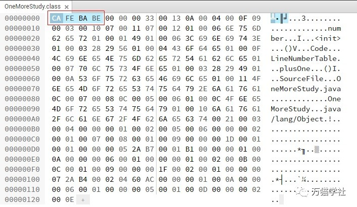
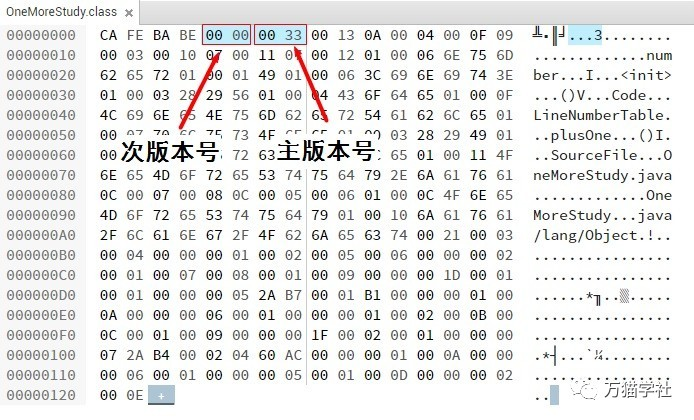
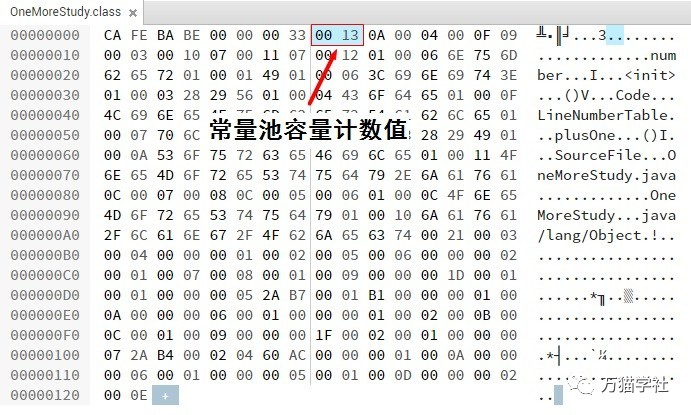
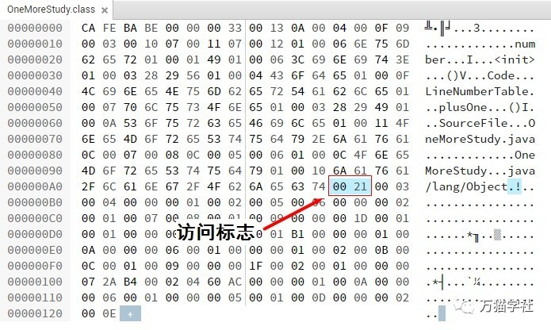

在Java刚刚诞生的时候就提出了一个非常著名的口号：“一次编写，到处运行。（Write Once，Run Anywhere）”。为了实现平台无关性，各种不同平台的虚拟机都统一使用一种程序储存格式，就是字节码（ByteCode）。它就以二进制字节流的方式被存放在Class文件中，其中包含了Java虚拟机指令集和符号表以及其他辅助信息。
欢迎关注微信公众号：万猫学社，每周一分享Java技术干货。
一般对于数据结构的分享难免比较枯燥，但是了解Class文件结构是了解Java虚拟机的重要基础之一。如果想比较深入地了解Java虚拟机，那么Class文件结构是不能不接触的。我会力求在保证逻辑准确的基础上，尽量通俗易懂地分享，并结合实际案例。
欢迎关注微信公众号：万猫学社，每周一分享Java技术干货。
Class文件是一组以8位字节为基础单位的二进制流，各个数据项目严格按照顺序准确地排列在Class文件中，中间没有任何分隔符。当遇到8位字节以上的数据时，就按照高位在前的方式（最高位字节在地址最低位、最低位字节在地址最高位的顺序储存）分割成多个8位字节储存。
Class文件格式采用一种类似于C语言结构体的伪结构来储存数据的，这种伪结构有两种数据类型：无符号数和表。
欢迎关注微信公众号：万猫学社，每周一分享Java技术干货。
无符号数用u1、u2、u4、u8分别代表1个字节、2个字节、4个字节和8个字节的无符号数，可以用来描述数字、索引引用、数量值或者UTF-8编码构成的字符串值。
表是由多个无符号数或其他表作为数据项构成的复合数据类型，所有的表都习惯地以“_info”结尾。表的数据结构和树很类似，无符号数相当于它的叶子节点，其他的表相当于它的子节点。整个Class文件就本质上也是一个表，具体结构如下：
| 类型 | 名称 | 数量 | 描述 |
|---|---|---|---|
| u4 | magic | 1 | 魔数 |
| u2 | minor_version | 1 | 次版本号 |
| u2 | major_version | 1 | 主版本号 |
| u2 | constant_pool_count | 1 | 常量池容量计数值 |
| cp_info | constant_pool | constant_pool_count - 1 | 常量池 |
| u2 | access_flags | 1 | 访问标志 |
| u2 | this_class | 1 | 类索引 |
| u2 | super_class | 1 | 父类索引 |
| u2 | interfaces_count | 1 | 接口索引计数值 |
| u2 | interfaces | interface_count | 接口索引 |
| u2 | fields_count | 1 | 字段计数值 |
| field_info | fields | fields_count | 字段 |
| u2 | methods_count | 1 | 方法计数值 |
| method_info | fields | methods_count | 方法 |
| u2 | attributes_count | 1 | 属性计数值 |
| attribute_info | attributes | attributes_count | 属性 |
可以发现，无论是无符号数还是表，当需要描述同一种类型又数量不定的多条数据时，就会用一个前置的计数器加几个连续的数据项的方式，这个时候我们就把这种一系列连续的某种类型的数据叫做这个类型的集合。
在Class文件中，无论是顺序还是数量，甚至是数据存储的字节序，都必须严格按照上面表格进行设定，哪个字节代表什么含义，长度是多少，先后顺序怎么样，都不允许改变。接下来看一下各个数据项的具体含义。
欢迎关注微信公众号：万猫学社，每周一分享Java技术干货。
魔数（Magic Number）是每个Class文件的前4个字节，它用来确定当前文件是否是一个被Java虚拟机所接受的Class文件。很多文件存储标准中都使用了魔数进行身份识别，比如gif、jpeg等图片文件中都有魔数。使用魔数而不使用扩展名是出于安全考虑，因为扩展名更容易被修改。文件格式制定者可以自主选择魔数，只要这个魔数没有被广泛使用又不和其他文件混淆就可以。
Class文件的魔数是：0xCAFEBABE（咖啡宝贝？），这个魔数在Java还被称为“Oak”语言的时候（大概是1991年）就确定下来了，据Java开发小组最初的关键成员Patrick Naughton说：“我们一直在寻找一些好玩的、容易记忆的东西，选择0xCAFEBABE是因为它象征着著名咖啡品牌Peet's Coffee中深受欢迎的Baristas咖啡”，他们是真的很喜欢喝咖啡啊，可能也预示着日后“Java”这个名字的出现。
欢迎关注微信公众号：万猫学社，每周一分享Java技术干货。
为了更快的理解，我准备了一个实际案例，一段非常简单的Java代码：
public class OneMoreStudy {
private int number;
private int plusOne() {
return number + 1;
}
}使用JDK 1.7把这段代码编译成Class文件，用HexEd打开，就可以到魔数了，如下图：

在接下来的分享中，也会经常使用这个Class文件。
欢迎关注微信公众号：万猫学社，每周一分享Java技术干货。
紧跟着魔数的第5和第6个字节是次版本号（Minor Version），第7和第8个字节是主版本号（Major Version）。Java的主版本号是从45开始的，从JDK 1.1以后每个JDK大版本发布主版本号都加1，高版本的JDK向下兼容低版本的Class文件，但不能运行更高版本的Class文件，即使Class文件的格式没有发生任何变化，Java虚拟机也会拒绝运行超过其版本号的Class文件。
再来看一下之前的Class文件例子：

表示次版本号的第5和第6个字节值为0x0000，表示主版本号的第7和第8个字节值为0x0033，也就是十进制的51，说明这个Class文件可以被JDK 1.7及其以上版本的Java虚拟机运行。
欢迎关注微信公众号：万猫学社，每周一分享Java技术干货。
紧跟着主版本号的就是常量池，它可以理解为Class文件的资源仓库，也是Class文件结构中与其他数据项关联最多的数据类型。因为在常量池中的常量数量是不固定的，所以首先有一个u2类型的数据，表示常量池容量大小（constant_pool_count）。
常量池的容量计数不是从0开始的，而是从1开始的，这是因为0有它的特殊用用途，那就是为了表达在特殊情况下需要表达“不引用任何一个常量池项目”的含义。在Class文件结构中只有常量池的容量计数是从1开始的，对于其他集合，包括接口索引集合、字段集合、方法集合等的容量计数都是从0开始的。
欢迎关注微信公众号：万猫学社，每周一分享Java技术干货。
再来看一下之前的Class文件例子：

常量池容器计数值为0x0013，也就是十进制的19，它表示常量池中有18个常量，索引值范围从1到18。
常量池中主要存储两种常量：字面量（Literal）和符号引用（Symbolic References）。字面量比较接近Java语言层面的常量，比如文本字符串、声明为final的常量值。符号引用则是编译原理层次的概念，它包括以下三种：
欢迎关注微信公众号：万猫学社，每周一分享Java技术干货。
常量池中每一个常量都是一个表，共有14种不同的常量类型（JDK1.7及之前版本），每一种类型的表在第一位都有一个u1类型的标志位，具体如下表：
| 类型 | 标志位 | 描述 |
|---|---|---|
| CONSTANT_Utf8_info | 1 | UTF-8编码的字符串 |
| CONSTANT_Integer_info | 3 | 整形字面量 |
| CONSTANT_Float_info | 4 | 浮点型字面量 |
| CONSTANT_Long_info | 5 | 长整型字面量 |
| CONSTANT_Double_info | 6 | 双精度浮点型字面量 |
| CONSTANT_Class_info | 7 | 类或接口的符号引用 |
| CONSTANT_String_info | 8 | 字符串类型字面量 |
| CONSTANT_Fieldref_info | 9 | 字段的符号引用 |
| CONSTANT_Methodref_info | 10 | 类中方法的符号引用 |
| CONSTANT_InterfaceMethodref_info | 11 | 接口中方法的符号引用 |
| CONSTANT_NameAndType_info | 12 | 字段或方法的部分符号引用 |
| CONSTANT_MethodHandle_info | 15 | 表示方法句柄 |
| CONSTANT_MethodType_info | 16 | 标识方法类型 |
| CONSTANT_InvokeDynamic_info | 18 | 表示一个动态方法调用点 |
有个一个专门分析Class文件字节码的工具javap，我们用它直接看一下之前的Class文件例子里的18个常量（常量池以外的信息已省略）：
E:\>javap -verbose OneMoreStudy
Compiled from "OneMoreStudy.java"
minor version: 0
major version: 51
Constant pool:
#1 = Methodref #4.#15 // java/lang/Object."<init>":()V
#2 = Fieldref #3.#16 // OneMoreStudy.number:I
#3 = Class #17 // OneMoreStudy
#4 = Class #18 // java/lang/Object
#5 = Utf8 number
#6 = Utf8 I
#7 = Utf8 <init>
#8 = Utf8 ()V
#9 = Utf8 Code
#10 = Utf8 LineNumberTable
#11 = Utf8 plusOne
#12 = Utf8 ()I
#13 = Utf8 SourceFile
#14 = Utf8 OneMoreStudy.java
#15 = NameAndType #7:#8 // "<init>":()V
#16 = NameAndType #5:#6 // number:I
#17 = Utf8 OneMoreStudy
#18 = Utf8 java/lang/Object其中，有一些常量好像在代码里没有出现过，如“I”、“
欢迎关注微信公众号：万猫学社，每周一分享Java技术干货。
紧跟着常量池的2个字节表示访问标志（access_flags），它用于识别一些类或接口层次的访问信息，具体见下表：
| 标志名称 | 标志值 | 含义 |
|---|---|---|
| ACC_PUBLIC | 0x0001 | 是否为public类型 |
| ACC_FINAL | 0x0010 | 是否被声明为final |
| ACC_SUPER | 0x0020 | 是否允许使用invokespecial字节码指令 |
| ACC_INTERFACE | 0x0200 | 是否是接口 |
| ACC_ABSTRACT | 0x0400 | 是否为abstract类型 |
| ACC_SYNTHETIC | 0x1000 | 标志这个类并非由用户代码产生的 |
| ACC_ANNOTATION | 0x2000 | 是否是注解 |
| ACC_ENUM | 0x4000 | 是否是枚举 |
其中，ACC_SUPER在JDK 1.0.2之后编译出来的Class文件必须为true；ACC_ABSTRACT对于接口或抽象类来说为true，其他类为false。
之前的例子OneMoreStudy是一个普通的类，不是接口、注解或枚举，只被public修饰，没有被声明为final或abstract，而且是JDK 1.7编译的，所以只有ACC_PUBLIC和ACC_SUPER为true，所以它的访问标志应该是0x0001 | 0x0020 = 0x0021，如下图：

欢迎关注微信公众号：万猫学社，每周一分享Java技术干货。
由于篇幅限制，这次的分享先暂时到这里，希望大家更好地消化吸收。欲知后事如何，请听下回分解！敬请期待！
欢迎关注微信公众号：万猫学社，每周一分享Java技术干货。